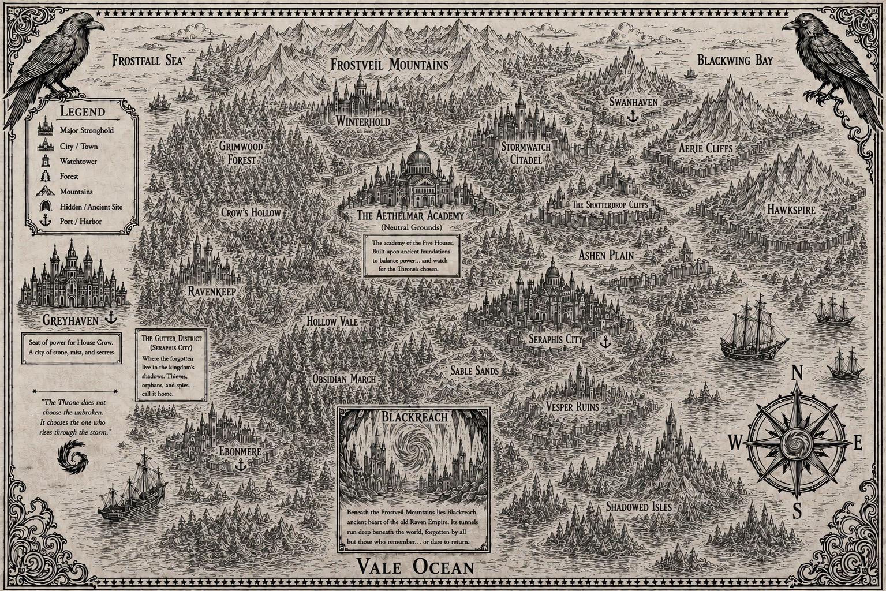

The Five Houses
Each House commands its own creed and its own raven, and every alliance shifts with the fall of a single word.
Worldbuilding
A landscape of raven courts, hidden rituals, and distant ruins where every choice echoes through kingdoms.
Map & Lore
The map reveals capitals carved from black stone, the silent forests of the Glasswood, and the forgotten highlands where prophecy was written in blood.

Each House commands its own creed and its own raven, and every alliance shifts with the fall of a single word.
The power here is subtle, dangerous, and tied to the bloodline of those who wear the marks of the raven.
Old gods whisper in ruins, and the past is as important as the war being waged in the present.